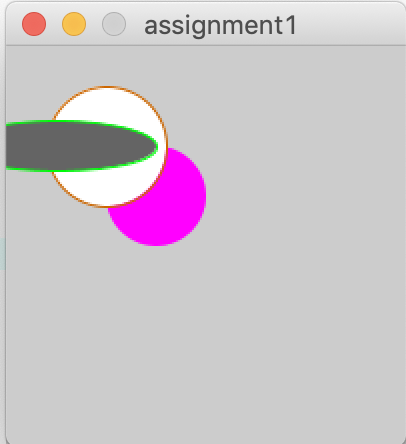
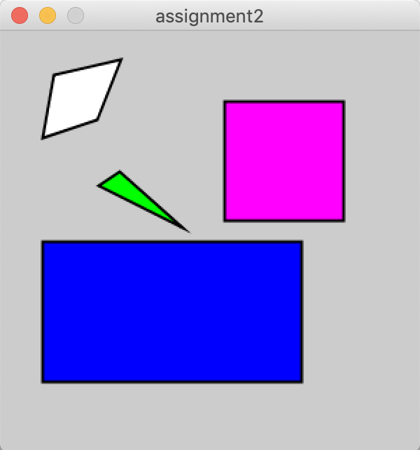
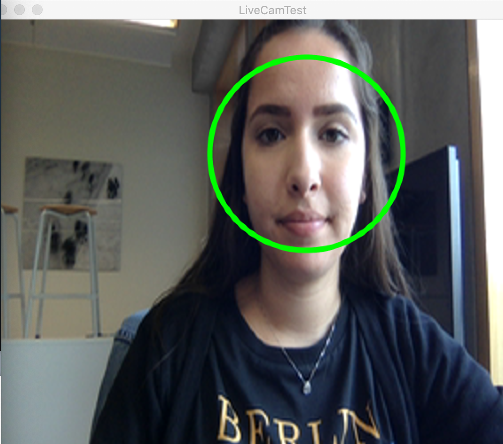
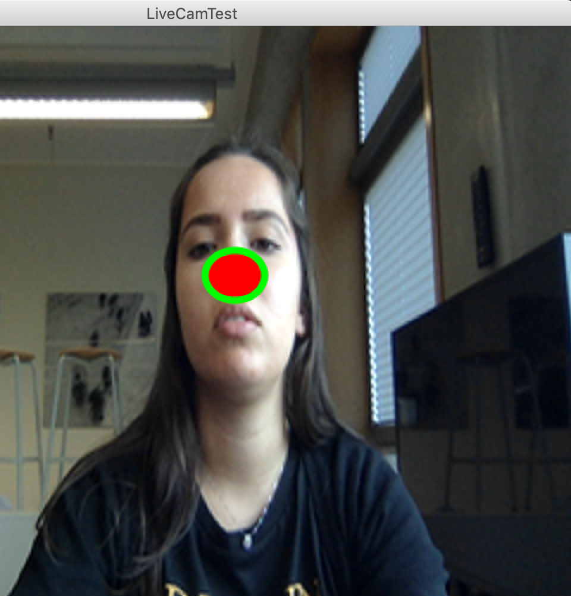

Opdrachten
Introductie
Wat is Computer Vision? Computer Vision wordt gebruikt met het programma Processing, waarmee interactieve afbeeldingen en animaties gemaakt kunnen worden.
Opdracht 1
Voor deze opdracht moesten er drie verschillende vormen gemaakt worden, met allemaal een andere kleur, andere randen en gepositioneerd op andere plekken.
void setup() {
size(200,200); //make a window that is 200 by 200 pixels
noStroke();
fill(255,0,255);
ellipseMode(CORNERS);//rondje in het midden
ellipse(50, 100, 100, 50);//afmetingen cirkel
stroke(204, 102, 0);
fill(255);
ellipseMode(RADIUS);//rondje in het midden
ellipse(50, 50, 30, 30);//afmetingen cirkel
stroke(0, 250, 10);
fill(100);
ellipseMode(CENTER);//rondje in het midden
ellipse(25, 50, 100, 25);//afmetingen cirkel
}
Resultaat:
Opdracht 2
Voor deze opdracht moesten er vier verschillende vormen gemaakt worden, met allemaal een andere kleur en gepositioneerd op andere plekken.
void setup() {
size(300,300); //make a window that is 200 by 200 pixels
strokeWeight(2);
quad(38, 31, 86, 20, 69, 63, 30, 76); //lijn
fill(255, 0, 255);
square(160, 50, 85);
fill(0, 255, 0);
triangle(70, 110, 85, 100, 130, 140);
fill(0, 0, 255);
rect(30, 150, 185, 100);
fill(255, 10, 100);
}
Resultaat:
Opdracht 3
Voor deze opdracht moesten er twee verschillende vormen gemaakt worden, met allemaal een andere kleur en die interactief zijn.
int diameter = 50;
void setup() {
size(400,400);
background (200,200,200);
frameRate(15);
}
void draw() {
background (200,100,200);
fill(204, 153, 0);
ellipse(mouseX, mouseY, diameter, diameter);
fill(0, 126, 0);
rect(mouseX, mouseX, diameter, diameter);
fill(204, 200, 0);
line(mouseX, mouseY, diameter, diameter);
}
Resultaat:
Opdracht CV1
Met een speciale code kan een gezicht herkend worden via de webcam op een computer. Voor deze opdracht moest ik ervoor zorgen dat als een gezicht herkend wordt, dat er een rondje om het gezicht verschijnt.
import gab.opencv.*;
import processing.video.*;
import java.awt.*;
Capture video;
OpenCV opencv;
void setup() {
size(640, 480);
video = new Capture(this, 640/2, 480/2);
opencv = new OpenCV(this, 640/2, 480/2);
opencv.loadCascade(OpenCV.CASCADE_FRONTALFACE);
video.start();
}
void draw() {
scale(2);
opencv.loadImage(video);
image(video, 0, 0 );
noFill();
stroke(0, 255, 0);
strokeWeight(3);
Rectangle[] faces = opencv.detect();
println(faces.length);
for (int i = 0; i < faces.length; i++) {
println(faces[i].x + "," + faces[i].y);
ellipseMode(CORNER);
ellipse(faces[i].x, faces[i].y, faces[i].width, faces[i].height);
}
}
void captureEvent(Capture c) {
c.read();
}
Resultaat:
Opdracht CV2
Met een speciale code kan een gezicht herkend worden via de webcam op een computer. Voor deze opdracht moest ik ervoor zorgen dat als een gezicht herkend wordt, dat er een rode cirkel op de neus kwam, zoals bij een clown.
import gab.opencv.*;
import processing.video.*;
import java.awt.*;
Capture video;
OpenCV opencv;
void setup() {
size(640, 480);
video = new Capture(this, 640/2, 480/2);
opencv = new OpenCV(this, 640/2, 480/2);
opencv.loadCascade(OpenCV.CASCADE_NOSE);
video.start();
}
void draw() {
scale(2);
opencv.loadImage(video);
image(video, 0, 0 );
fill(255,0,0);
stroke(0, 255, 0);
strokeWeight(3);
Rectangle[] faces = opencv.detect();
println(faces.length);
for (int i = 0; i < faces.length; i++) {
println(faces[i].x + "," + faces[i].y);
ellipseMode(CORNER);
ellipse(faces[i].x, faces[i].y, faces[i].width, faces[i].height);
}
}
void captureEvent(Capture c) {
c.read();
}
Resultaat:
Opdracht CV3
Voor deze opdracht kreeg ik een voorbeeld waarmee het lichtste punt in de webcam gedetecteerd werd, maar ik moest een verandering in een code aanbrengen waardoor er iets anders zou gebeuren. Ik heb de code zo veranderd dat de code juist het donkerste punt in de webcam detecteert. Het rode kleine rondje geeft aan waar het donkerste punt zich bevindt.
import gab.opencv.*;
import processing.video.*;
OpenCV opencv;
Capture video;
void setup() {
size(640, 480);
video = new Capture(this, 640, 480);
opencv = new OpenCV(this, 640, 480);
video.start();
}
void draw() {
opencv.loadImage(video);
image(video, 0, 0 );
PVector loc = opencv.min(); //lichtste punt
stroke(255, 0, 0);
strokeWeight(4);
noFill();
ellipse(loc.x, loc.y, 10, 10);
}
void captureEvent(Capture c) {
c.read();
}
Opdracht AR
Door middel van een speciale afbeelding, kan er een vorm afgebeeld worden op het scherm via de webcam en Augmented Reality. Dit heb ik getest met een voorbeeld uit de les.
import processing.video.*;
import jp.nyatla.nyar4psg.*;
Capture cam;
MultiMarker nya;
void setup() {
size(640,480,P3D);
colorMode(RGB, 100);
println(MultiMarker.VERSION);
cam=new Capture(this,640,480);
nya=new MultiMarker(this,width,height,"../../data/camera_para.dat",NyAR4PsgConfig.CONFIG_PSG);
nya.addARMarker("../../data/patt.hiro",80);
cam.start();
}
void draw()
{
if (cam.available() !=true) {
return;
}
cam.read();
nya.detect(cam);
background(0);
nya.drawBackground(cam);//frustumを考慮した背景描画
if((!nya.isExist(0))){
return;
}
nya.beginTransform(0);
fill(0,0,255);
translate(0,0,20);
box(40);
nya.endTransform();
}